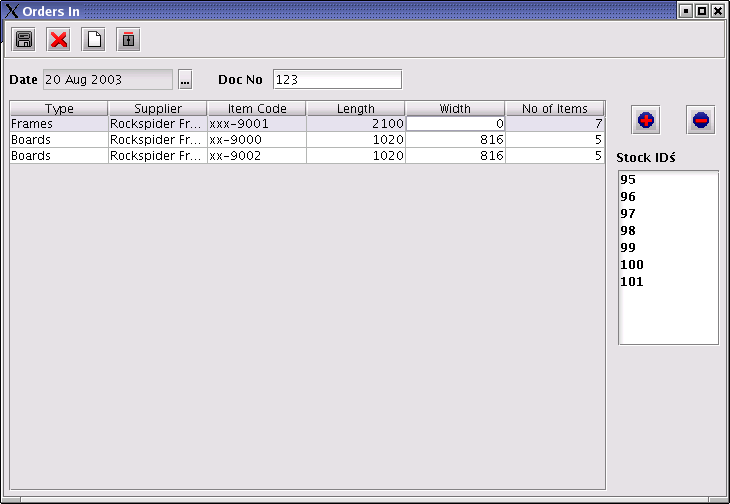

The Stock Process in RSF
1. Introduction
The aim of the RSF Stock Control system is to ensure
that the stock figures displayed in RSF are a true representation of
the physical stock in your business. In theory, the quantity of stock
can only change if one of the following events occur:
New Stock arrives (increase the amount of stock)
Offcuts are posted ( increase the amount of
stock)
A design is created (decrease the amount of
stock)
Stock units are sold (decrease the amount of
stock)
2. New Stock is ordered
The material information must be captured before
material items can be added to the stock of your business. See the
Capturing of Information section for help with capturing
material data. In addition, the Howto manual has
step-by-step directions for the capturing of new material details. It
is also possible to download all material information from the
internet. Note that the fact that the material information has been
captured, does not mean that it is automatically added to the stock.
After the stock has been ordered, the following will
happen:
1. Physical stock arrives from the supplier.
2. Stock
entered into in RSF Stock Control System.
Enter stock into the RSF Stock Control System as
follow:
Select Stock | Orders In on the Main menu.
The Orders In dialog will be displayed as shown
below.
Enter
all the relevant order information that will appear on the delivery
note or invoice. Make sure that the following information has been
entered correctly before saving:
Date (If the correct date has not been
specified, click on the ellipses button to select the date.)
Enter the invoice number.
Click on the
 button to ad a new record to the grid. It will then be possible to
enter the details of the material items. When the Type, Supplier or
Item Code cells are selected, an small arrow appears in the cell.
Click on the arrow to display a dropdown box. If the information is
entered in a left to right sequence with Material Type first, then
Supplier and followed by the Item Code, the dropdown boxes will act
as filters. For example, only the item codes of the selected
supplier will appear in the dropdown box in the item code column.
The item code dropdown box will only appear if a supplier has been
specified. Dropdown boxes do not appear when entering the length,
width or number of items. The width of frames need not be specified.
button to ad a new record to the grid. It will then be possible to
enter the details of the material items. When the Type, Supplier or
Item Code cells are selected, an small arrow appears in the cell.
Click on the arrow to display a dropdown box. If the information is
entered in a left to right sequence with Material Type first, then
Supplier and followed by the Item Code, the dropdown boxes will act
as filters. For example, only the item codes of the selected
supplier will appear in the dropdown box in the item code column.
The item code dropdown box will only appear if a supplier has been
specified. Dropdown boxes do not appear when entering the length,
width or number of items. The width of frames need not be specified.
The
button will permanently delete the selected record.
Save the information regularly by clicking the
Save ( )
button.
)
button.
When new material information is saved, a
stock-id is generated for every stock item. The stock-id's that has
been generated for the specific material items of the selected entry
in the grid, will be displayed in the Stock ID listbox. This can be
seen in the figure below. Seven stock-id's are displayed in the
Stock Id listbox, because seven lengths of frame xxx-9001 has been
ordered. If the next record in the grid should be selected, the five
stock-id's of frame xx-9000 will be displayed in the listbox. The
aim is to allocated a unique stock-id to each of the ordered
material items.

Mark
each item with it's stock-id by using a permanent marker or sticker
and store the marked items.
Close the Orders In window by clicking on the
button.
If needed, it is possible to specify the
location of stock items. Select Stock | Current stock on the main
toolbar. The Current Stock window will be displayed. The location of
single items can be specified by selecting the stock id in the Stok
Id listbox before entering the location, or by toggeling the radio
buttons to Single Items before specifying a location. The location
of grouped items are specified by toggeling the radio buttons to
Group Items. Grouped items are then displayed in the grid. Make sure
that a stock-id has not been selected in the Stokd Id listbox before
entering the location. Click on the close button ()
to close the window. The location will be saved automatically.
3. Allocate material to a Design
Before material can be allocated, an existing design
must be selected or a new design created. See the Designs section for
help with creating a new
design. In addition, the Howto manual has step-by-step
directions.
Allocate stock to a design after the design has been
finalised, by clicking on the Allocate stock to Design button ( ).
The following window will be displayed.
).
The following window will be displayed.
Before
displaying the above window, the RSF software will attempt to
optimise the allocation of stock. If it was successful, suggested
material items will be selected. The user only need to confirm the
RSF selection, but also has the option of changing it. If the
optimization of stock allocation was not possible, no stock items
will be selected in this window when it opens. The user then need to
select the stock items needed for the design. This process can be
simplified by using the material type filter at the top of the
window. Only the selected material type will be listed and that will
streamline the selection of material items. Please note that stock
allocation is not done according to the design name, but according to
the design code. This is to prevent confusion in instances where more
than one design may have the same design name. When satisfied with
the selected material items, click on the Allocate button to save the
stock allocation of the design.
It is possible to navigate to another design without
closing this window by simply selecting another design code from the
dropdown box. If another design code has been selected without
clicking the Allocate button first, the user will be asked if the new
selection must be updated. If the user clicks the No button,
the allocation information will be lost.
After material items has been allocated to a specific
design, the selected items will be locked, and it will not be
possible to use the same items in other designs. It is possible to
change the stock allocation. Simply repeat the process described
above.
Close this window by clicking the
button.
4. Post Offcuts
The figure below is an example of the printed offcut
list.
The
offcut list contains all the material items in the design. Measure
the length and width of the offcuts in the space provided. Users have
the option to either post the offcuts immediately or at a later
stage.
To post offcuts, select Stock | Offcuts on the Main
toolbar. The offcut window will be displayed as shown below.
Post
the offcuts as follow:
Ensure that the correct date has been selected
Select the Design Code for which offcuts are to
be posted.
Click on the
button to create a new entry.
Supply the required material information. Note
that the Stock Id is not accessible.
Click on the Save button ().
RSF will then generate a new Stock Id for the material items.
Mark the offcuts with their new Stock Id and
return the item to the stock storeroom.
If needed, it is possible to specify the
location of each material item as described above.
Repeat the above steps for
each of the offcut material items.
The process described above requires that the framing
process itself be organised in a specific way. If users should choose
not to post the offcuts immediately after the materials for each
design has been cut, it is recommended that a intermediary shelve be
created. All the offcuts are put on the intermediary shelve, grouped
together according to design. Offcuts on the intermediary shelve are
then posted at regular intervals.
5. Removing stock from the RSF Stock Control
System
RSF realise that it is sometimes necessary to remove
stock form the system without using it in a design. This will
typically happen when stock is returned to the supplier or in
instances where stock my be sold as is. Stock can be removed by
selecting Stock | Sales and Returns from the main menu. The following
window will be displayed.
Select
the stock items you want sell or return to the supplier and click the
sell button. Follow these steps when stock needs to be removed from
the RSF Stock Control System for whatever reason.
6. Stock Take
In most types of business stocktaking is a
timeconsuming process and needs to be planned in advance. The RSF
Stock Control System does, however, go a long way to streamline the
process.
Navigate to the Stock Taking window by selecting
Stock | Stock Take on the main toolbar.
When the Stock Take window opens, click on the
button to start a new stock-take session. Add material items to the
stock-take session as follow:
Ensure that the correct date has been selected
Click on the
button to create a new entry.
Supply the required details for each material
item. If information is entered in a left to right sequence,
dropdown boxes will appear which will act as filters in order to
streamline datacapturing.
Regularly click the Save button ().
When the Save button is clicked, a new Stock ID
will be generated for each material item.
Mark each material item with it's new Stock ID
and return the item to the store.
It is not mandatory to complete the stock take
in one big session, as it is possible to exit the stock take session
and return to it later.
When the stock take is finished, click the
Complete button. Note that once the user has clicked the Complete
button, it will not be possible to re-open the stock take session.
Click on the Close button ()
to close the window.
After the stock take has been completed, view the
discrepancies by selecting Stock | Discrepancies on the main toolbar.
The following window will be opened:
This window displays discrepancies found during the
stocktake. By selecting the dates of previous stock-takes in the
dropdown box, it is possible to compare discrepancies of different
stock-takes.
The business owner needs to determine the level of
acceptable discrepancy and balance that with time constraints within
the business. When the accuracy of offcut measurement increases, the
level of discrepancy will decrease and vica versa. Accurately
measuring offcuts is, however, more timeconsuming and the business
owner under severe time pressure may decide to accept higher levels
of discrepancy.